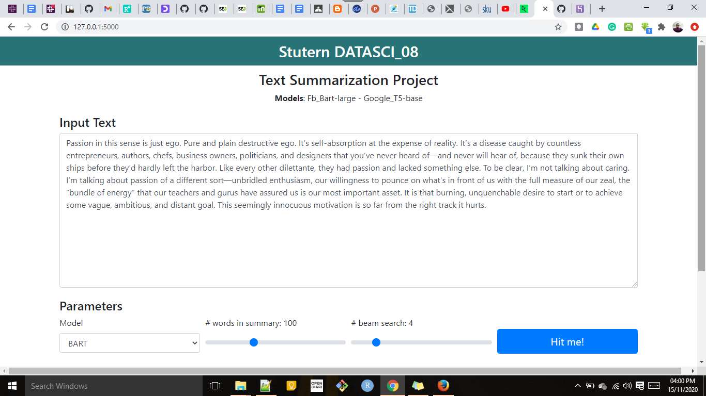

Ndcharles Nweke
Data Scientist | Teacher | Growth Marketing
An engineering graduate who is now in data science/ML. An awesome journey so far🙌. My interests are in real-life applications of data science/ML to business to tackle every day problems.
Let's Connect
LinkedIn | Twitter | Blog |
View my Resume
Summarising text Using BART and T5

Text summarization is the process of distilling the most important information from a source text to produce an abridged version for a particular user and task.
Humans conduct the text summarization task as we have the capacity to understand the meaning of a text document and extract salient features to summarize the documents using our own words.
However, automatic methods for text summarization are crucial in today’s world where there is a lack of workers as well as time to interpret the data. Therefore, in this project I will explore text summarization models BART and T5 to achieve automatic summarization.
Method
BART is a Seq2Seq model that performs well on multiple tasks like abstractive dialogue, question answering and summarization.
T5 is an encoder-decoder model pre-trained on a multi-task mixture of unsupervised and supervised tasks and for which each task is converted into a text-to-text format. T5 works well on a variety of tasks out-of-the-box such as translation, questions answering and summarisation.
BART and T5 were used for this project as they have been pre-trained. Using them reduced the lead time required for the project completion.
[View project on GitHub]Discussions
The codes were run in Google Colab and further on local host. The outputs were reasonably good. However, due to the size of pre-trained files, model size is pretty large. It is to be hosted on heroku for public access since that is the only way to enable public review of the work. However, due to the size of the pre-trained data and the limit of Heroku free-tier, the model couldn't be hosted on there.
[View my GitHub profile] | [Read the Blog]